发布时间：中文原文 2026-10-31 晚（北京时间 = UTC+8）发于 DeepSeek Harness 官方公众号（据 IT之家、环球网报道）；X Article 版 2026-11-01 19:37 UTC+8。互动数据（2026-11-02 20:35 UTC+8，经 X API 读取）：约 212 万次浏览、1.15 万赞、1,416 转帖、683 引用、397 回复、1.46 万收藏。@deepseek_ai 主账号已转发。
导读
是谁写的。发帖账号 @DeepSeekHarness（2026-06 注册，蓝标订阅认证而非机构金标）。它的官方身份有三条独立佐证：DeepSeek 主账号 @deepseek_ai 在 10-17 的模型发布帖里直接 @ 了它、并转发了本文；文中链接的原型仓库位于 DeepSeek 官方 GitHub 组织 deepseek-ai 下；账号主页链接 deepseek.com/en/harness。作者署名 Yujia Qiao（实现 + 写作），另列 15 位审阅者。
讲了什么。五个模块：①双层架构（Router / Worker）；②事件驱动（Trigger、两级过滤、Thread 订阅直通、Inline & Spill 与链式召回、投机执行）；③全双工多信道交互（异步 start()/stop() 的 ReAct 循环、IM 回复限 100 词）；④计算 / 状态 / 执行环境两级分离（云端无状态 Agent Loop + 数据库 + 端点轻量 daemon，支持 BYOM）；⑤外置 Watchdog 会话。核心论点是：这些都是计算机系统里的老办法（Fast/Slow Path、序点、缓存与 spill、局部性、投机执行、存算分离、外部控制回路），搬到 Agent 上同样成立。
怎么读数字。第 7 节的实验是团队自测，用合成负载、模拟编码工具，每种设计跑 5 次，作者自己也说“仅供参考”。p50 12.4 分钟 vs 单会话中性提示词 20.4 分钟，主要说明“让主会话不干活”的系统约束比提示词更稳；代价是 token 更多（23.2M vs 6.1–10.8M）。⚠️ 未见第三方复现。
和本库已有内容的关系。与 Anthropic“大脑与双手分离”（Managed Agents）思路一致，文中自己点了名；与 Spawn 的“常驻智能体舰队”、环境即协调（stigmergy）可对照：这里的 Worker 也是靠订阅同一个 Thread 来“看见”彼此，而不是点对点通信。
⚠️ 注意
- 本文是架构探讨，作者明确说“并非对 DeepSeek Harness 现有功能的介绍”；异步任务机制“已实现但未默认开启”。原型仓库 README 也说与内部版本和文中实现不完全一致、部分设计未实现。
- 实验数字均为团队自报，合成负载、样本小（每设计 5 次）⚠️ 未核实。“一个人通常只能跟进 3–5 个活跃会话”为团队观察，非研究结论 ⚠️。
- 利益相关：发布方是 DeepSeek 产品团队，文章同时在推广自家 DeepSeek Harness（开源，MIT）。原型声明“不是 DeepSeek 正式产品”。
- 本页正文是据官方英文机器翻译回译的中文，非公众号中文原文 ⚠️（见下）。
- 安全提醒（原文 8.4 节自己也承认）：云端 Agent Loop 连接带凭证的个人机器，一旦被提示词注入攻陷，所有相连端点都有风险。按原型的 SETUP 起步时，建议用专用账号、窄白名单、observe 模式。
全文中译：《Super-agent 设计探索：迈向更自主的 Agent 系统》
英文题 Exploring Super-agent Design: Towards a More Autonomous Agent System。作者在 X 发布的是官方英译（文首注明“原文为中文，此为机器翻译”）；中文原文首发于 DeepSeek Harness 微信公众号。公众号文章页受 robots.txt 限制，本站没有抓取，下文据 X 上的官方英译回译成中文，术语尽量与已公开报道中的中文原文说法对齐（如“连续 / 高效 / 主动 / 持久”“序点”“链式召回”“存算分离”）。⚠️ 措辞与中文原文不会逐字一致，引用请以公众号原文为准。
本文是一篇架构思路探讨，并非对 DeepSeek Harness 现有产品功能的介绍。
1. Super-agent
过去一年里，以编程 Agent 为代表的单任务 Agent 已经证明：模型能够使用工具解决复杂问题，而且越来越少需要人类持续监控和逐步干预。模型协调多个 Agent 的能力也在提升，使跨会话组织和调度工作变得可行。随着人参与底层执行越来越少，人的角色正逐步上移到更高层的决策与验收。
更强的模型也催生了新的应用。近来出现了许多个人助手（Personal Agent），它们直接接入日常的消息、日程、邮件和工作平台，持续关注信息流并协助处理事务。个人助手只是这种“持续在线、事件驱动”工作方式的一类应用；这种方式并不限于个人场景，在软件开发等商业工作中同样很有价值。
然而，今天主流的 Agent 设计还难以在多任务或整个团队的规模上支撑这种工作方式。Agent 仍以单个会话（Session）为基本工作单位，会话之间彼此隔离。用户并行推进几项任务时，必须手动在会话之间切换，并记住每个会话里有什么。据我们观察，一个人通常只能同时跟进 3 到 5 个活跃会话。在这类设计下，单任务的上限取决于模型能力，而多任务的上限取决于人的注意力。
给现有的本地单会话 Agent 加上 CLI、MCP 或外部连接器，可以让它接收外部消息，但基本限制依然存在：它仍运行在一个同步会话里，遇到耗时操作就会阻塞；不同任务的上下文混在一起；本地设备一离线，一切就停下来。维持这样一套东西运转，需要大量人工投入。
要突破这些限制，就要让 Agent 摆脱任何单个、靠人手动驱动的会话，成为一个跨会话保持上下文、能同时推进多项复杂任务且任务之间互不干扰的连续实体。我们把这种 Agent 及其系统架构称为 Super-agent。
例如，我们内部运行在 DeepSeek Harness 上的 Super-agent 实例，可以在 IM 和 GitHub 之间连续推进同一个开发任务；它还会关注公共群聊里的反馈，即使没人 @ 它，也会自行定位根因并提交 Pull Request 修复：
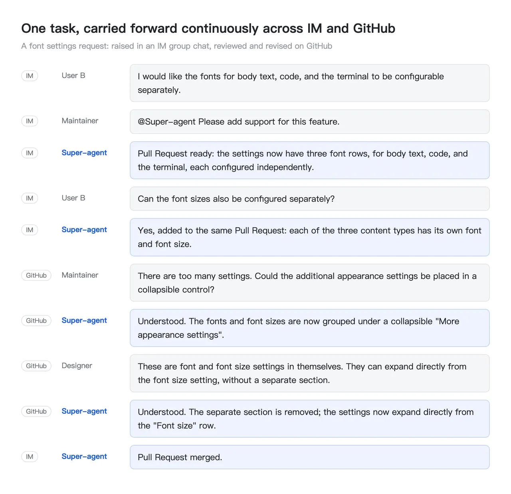
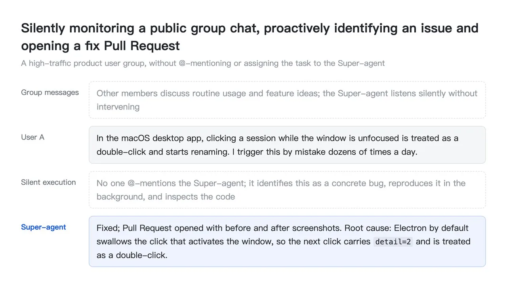
我们认为 Super-agent 有四个基础特征：
- 连续（Continuous）：用户可以直接在自己本来就在用的地方与它交互，比如 IM 聊天和 GitHub 评论，并且始终感觉面对的是同一个 Agent，不必去想“会话 X 的上下文里有没有信息 Y”。例如，用户先在 IM 里要求采用方案 A，后来在 GitHub Pull Request 评论里改为方案 B，Agent 能理解这一变化并调整手上的工作。
- 高效（Productive）：响应迅速，能并行完成多项复杂任务，且每项都达到较高标准；上一个命令或任务还没完成，就能接受下一条指令。
- 主动（Proactive）：不等人逐步下指令；它关注环境中的事件，对值得处理的事采取行动，其余时候保持安静。
- 持久（Persistent）：始终在线，直接接入用户真实的工作环境，在长期运行中遇到异常能自动恢复。
单个 ReAct 循环无法同时提供这四个特征，它们必须来自外围的系统架构。相似的设计约束往往导出相似的架构。当目标是一个始终在线、并发响应环境事件的系统时，我们预计个人助手与软件开发等商业工作中的 Agent 最终会走向相近的设计。构建这样的系统还会遇到许多与计算机系统领域长期研究的问题非常相似的问题，因此该领域的许多经典设计思想在这里同样适用。
具体实现会各有不同，但我们认为有五个模块构成了支撑这些特征的基本框架：双层架构（第 2 节）同时提供连续交互与高效并发；事件驱动设计（第 3 节）让 Agent 具备主动性；全双工多信道交互（第 4 节）让与用户的每次交流既连续又高效；计算、状态与环境的分离（第 5 节）加上 Watchdog（第 6 节），让 Agent 跨设备持久在线，并能自行从异常中恢复。
下图是 Super-agent 架构的总览，标为 [2] 到 [6] 的模块分别在第 2 到第 6 节介绍：
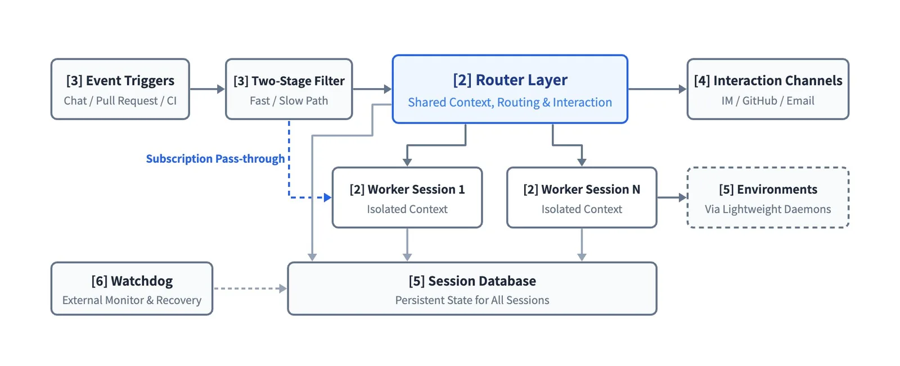
2. 双层架构
既要跨信道连续交互，又要跨任务高效并发，这就迫使系统在组织会话时，在连续性与吞吐量之间做一个根本性的取舍。
把所有事件都路由到一个会话，上下文最连续，因为这个会话什么都看得到。但 ReAct 循环一次只走一步，这限制了单个会话的工作速度：任务耗时长，吞吐量低。不同任务的中间细节还会交错在同一个上下文里，拉低结果质量。
给每个事件各开一个新会话，取舍正好反过来：并发吞吐量最大，但当任务并非完全独立时，缺少共享的全局上下文会让各自的结果脱节；多个会话分别回复用户，交互也会混乱。
为了兼得连续性和吞吐量，可以把工作分到两层：常驻的 Router 层（2.1 节）负责所有人类交互与全局协调，维持全局连续性；上下文隔离的 Worker 层（2.2 节）以高并发执行任务，如下图所示：
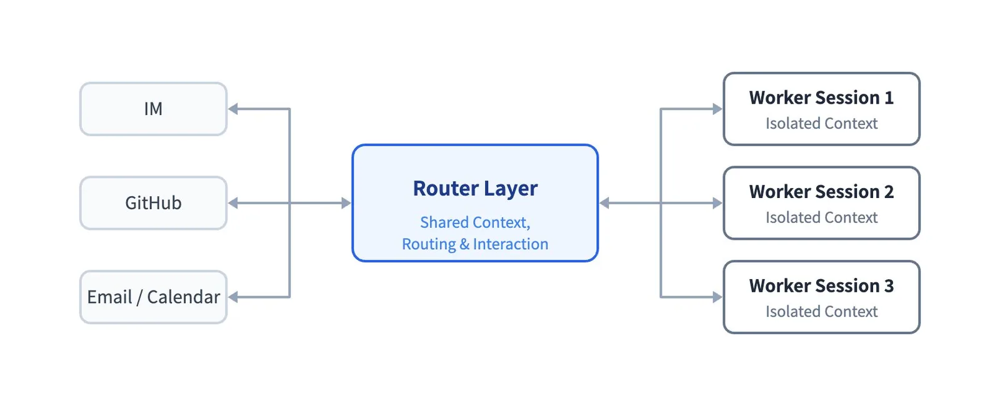
有了双层架构，系统接管了上下文管理和并发执行，用户很少需要去想会话的事，面对的始终是同一个 Super-agent。由此看来，让用户手动管理会话，在很大程度上是从底层 LLM API 沿袭下来的设计习惯。会话应当是系统的实现细节，而不是用户的认知负担。
在现有设计中，会话同时承担两件事：管理模型的上下文，以及充当用户做项目管理的单位。一旦产品与底层会话解耦，项目管理就不必再沿着会话边界划分。向用户提供什么样的交互与任务管理，变成了一个独立的产品问题，我们后文再谈。
两层是职责上的逻辑划分。哪一层都不必实现为单个会话，各自都可以有内部结构。下面两小节依次介绍这两层。
2.1 Router 层
Router 层是常驻的全局路由层，承接来自所有入口的人类交互。所有跨任务的信息与决策都汇集于此，因此它是系统的全局序点（Sequence Point）、协调点和记忆。为了不让这个单一全局节点成为性能瓶颈，Router 层在设计上不亲自执行任务，只与人交互和分派任务，甚至可以完全不配 Bash 工具。
一个中心节点向多个执行节点分派任务，这种结构看起来像典型的 Agent Team，但两者侧重不同。Agent Team 通常把一个复杂任务拆成若干步骤，并协调负责这些步骤的各个角色。由于这些步骤往往耦合紧密，Team Lead 常常需要深入理解任务、规划子任务并频繁协调成员，推理负担很重。而在 Super-agent 中，Router 层只分派任务、在高层跟踪任务之间的关系，不拆解单个任务。反过来，Agent Team 也可以作为双层架构来用：这时需要用提示词约束主会话不亲自执行任务，只负责对外交互，并把各自独立的任务分派给成员独立推进。从我们的经验看，Router 层的工作往往比预想的简单，较轻量的模型通常就能兼顾速度与质量。
Router 层内部也不必是单个会话，其中一些逻辑甚至可能不需要 LLM。我们选择了最直接的设计——单个常驻 LLM 会话——并发现它没有看上去那么容易成为吞吐瓶颈。原因在于：一次推理回合期间到达的环境事件（第 3 节的 Trigger）会排队，在下一回合一起处理。效果就是批处理，而一起处理这些事件增加的开销很小：
- 外部事件匀速到达时，Trigger 一个接一个进入 Router 会话，每次都很快得到响应。
- 事件突发、开始在 Router 会话排队时，上一回合积攒的 Trigger 会被自动合并，一起注入下一次 LLM 调用。由于 Router 会话只做轻量的交互与分派，每一步通常是长输入、短输出。合并进同一次 LLM API 调用的多个 Trigger 在 Prefill 阶段并行计算，所以单次请求的耗时增长远慢于批大小的增长。于是在一定范围内，积压越多，每个决定分摊的推理时间反而越短。这个范围取决于上下文长度，以及模型在一回合内能准确处理多少个 Trigger。
7.2 节用实验量化了批处理的效果。配合订阅与直通（3.2 节）和链式召回（Chain of Recall，3.3 节），单个常驻 Router 会话既能保持上下文连续，对我们目前规模的团队也已经够用。
如果系统增长到一个会话确实跟不上，Router 层内部可以采用多级过滤结构，或按水平分片拆成多个会话。这时它的内部设计又回到了连续性与吞吐量的同一个取舍：分片越细，Router 层并发吞吐越高，但分片之间共享的记忆和上下文越少。在全局记忆问题解决之前，这个取舍会一直存在。
2.2 Worker 层
Worker 层由执行任务的会话组成。每个 Worker 拥有隔离的上下文和一整套执行工具，专注于单个任务。Worker 会话直接决定每个任务的结果和代码质量，所以通常需要能力最强的模型。
Worker 从不直接与人交互，它们的推理过程和工具调用不出现在外部信道里。每个 Worker 向 Router 层汇报状态，由 Router 层负责所有对用户的回复。这样，系统既保住了并发度和产出质量，又避免了多个会话各自回复带来的混乱。
任务并发执行时，每个 Worker 推进自己的任务，同层 Worker 之间通常不需要直接通信。Worker 之间的冲突多发生在共享的工作环境里，比如同一个 Pull Request。只要相关 Worker 都订阅了该环境对应的 Thread，就会收到相同的事件通知（3.2 节），有机会自己发现并解决冲突。少数需要跨任务协调的情况，由 Router 层中转。
和 Router 层一样，Worker 内部也不必是单个会话。遇到复杂任务，Worker 可以创建 Subagent，或者本身就是一个 Agent Team，这对上层的 Router 是透明的。同样的结构适合代码协作：复现 issue、评审 Pull Request、开发功能等相互独立的任务可以同时推进、互不阻塞。它也适合个人助手场景——尽管个人助手通常只提供一个聊天页面。用户在这个聊天里同时谈几个话题时，页面保持对话连续；与此同时，后台可以为每个话题分派一个独立的 Worker，并行处理任务、起草回复。
3. 事件驱动的 Trigger
要让 Super-agent 具备主动性，首先要改变驱动系统的东西。Agent 的主要输入不再是人一条条敲进会话的提示词，而是来自环境的半结构化事件。在 Super-agent 中，这些环境事件——群聊消息、邮件、日程提醒、代码评审评论、CI 结果等——称为 Trigger。由于 Agent 监听并响应 Trigger，它不必再像单会话 Agent 那样，每次运行前都等人下命令。
下面几个小节沿着一条环境事件从到达到被处理的过程，分四个逐层递进的步骤展开：先用代码与模型结合的两级策略滤掉大量噪音（3.1 节）；再由订阅与直通机制把事件路由给 Worker（3.2 节）；接着用 Inline & Spill 与链式召回向模型注入高密度上下文，并按需召回更多（3.3 节）；最后，投机执行让 Agent 能根据环境信号在后台提前行动（3.4 节）。
3.1 事件过滤
一旦接入真实的群聊和代码平台，系统面对的是噪音大、触发率低的事件流：绝大多数日常消息都不需要 Agent 做什么。让大模型从头判断每个事件，延迟太高、算力也太费。借鉴计算机系统中 Fast Path / Slow Path 的思路，我们把大模型推理视为灵活但昂贵的 Slow Path；高频、定义明确、稳定的判断则可以写成确定性代码，作为低延迟、低成本的 Fast Path。
因此，系统对每个进入的事件先做过滤：在调用任何大模型之前，先用确定性策略去掉噪音，只有需要语义理解的候选事件才交给模型。我们采用程序化策略与大模型结合的两级过滤：
- 程序化策略（Fast Path）：代码根据事件来源、所在群组、用户或机器人白名单等确定性条件做快速准入检查。例如，每个来源可以设为“只响应明确请求”“作为候选事件”或“忽略”。这些检查在调用任何模型之前就丢掉了大部分无关消息。
- 语义策略（Slow Path）：通过程序检查的候选事件交给 LLM，由它根据上下文和以提示词写成的策略决定是否行动。语义这一级同时是一个天然的自然语言扩展点：人可以随时通过提示词开关策略或添加新策略，如下图所示：
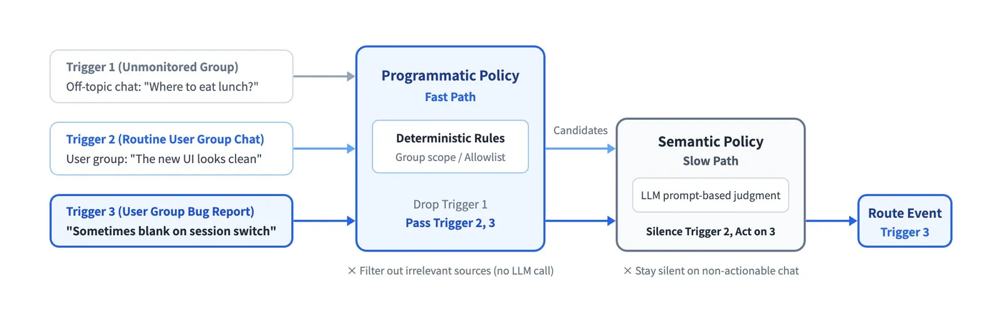
3.2 事件路由
第 2 节的全局 Router 层保证了跨信道交互的连续性。但如果已分派任务的每个后续事件仍要经过 Router 层，这个单一全局节点负担会很重，响应也会变慢。所以 Fast / Slow Path 的划分同样用于已过滤事件的路由：Router 层只处理新任务的冷启动和跨任务协调，后续事件由代码直接送到拥有它们的 Worker 会话。
在真实工作流中，同一个 GitHub Pull Request、同一个 IM 话题或同一串邮件上的连续事件构成一条事件流，我们称之为 Thread：
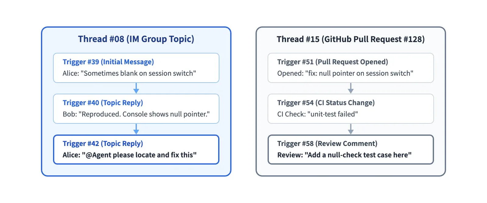
Router 层为某个 Thread 的第一个事件创建 Worker 会话时，该 Worker 直接订阅这个 Thread。此后，事件路由走下图两条路径之一：
- 已订阅（Fast Path）：代码把该 Thread 的后续事件直接透传给订阅它的 Worker，Router 层不必再发起一次工具调用去转发。如果新事件超出当前任务的范围，Worker 可以取消订阅，或把事件交回 Router 层重新分派。
- 未订阅（Slow Path）：Router 层仍能看到所有事件，以便跟踪全局状态，但它只评估和分派尚无订阅者的新事件。
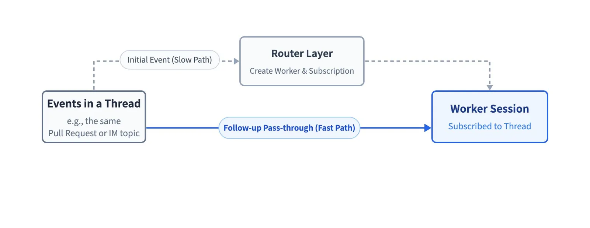
Thread 与 Worker 之间的订阅是多对多的：一个 Worker 可以订阅几个相关的 Thread，一个 Thread 也可以有多个订阅它的 Worker。当多个 Worker 在同一工作环境或讨论里重叠时，共享 Thread 里的每个新事件都会同时直通给全部订阅者。Worker 由此有机会得知彼此在做什么，并自行化解冲突，无需点对点通信。在输出一侧，Worker 仍把关键结论汇报给 Router 层，由它负责所有对用户的回复，并保持全局记忆同步。
3.3 上下文组织
事件过滤并路由到目标会话后，下一个问题是往模型上下文窗口里放多少信息。输入不再是数量有限的人类提示词，而是环境持续产生的半结构化事件，所以工具调用和事件注入的设计更加重要。注入太多，窗口被塞满，稀释模型的注意力；注入太少，模型就得一遍遍调用工具读取上下文，增加执行步数。浪费上下文窗口，就是浪费模型的智能。
因此可以把有限的上下文窗口看作缓存。借用编译优化和计算机系统的术语，上下文注入归结为两个基本操作：Inline 把近期很可能用到的信息直接放进当前上下文窗口，省去额外的工具调用往返；Spill 把超出预算或很少用到的完整信息留在窗口之外，窗口里只留一个引用或摘要，模型需要时可通过它读取完整信息。
结合计算机系统设计中的经典思想——局部性，Inline & Spill 可以一步步改进事件注入与工具调用：
- 从最少信息开始：一开始只给模型当前对象的 ID 和内容摘要。
- 按局部性逐步 Inline 相关信息：Inline 模型很可能马上要用的东西。先是紧密相关对象的 ID，再加上空间或时间上相邻的内容。例如内容的前 50 个字符、某条 IM 消息前后的消息及其回复的那条消息、同一代码评审讨论里相邻的评论。
- 超限内容 Spill 出去：对无法完整 Inline 的长内容设一个较小的长度上限，把超出部分 Spill 到窗口之外。简单的做法是截断内容并留下指向后续位置的指针，模型需要时调用工具读取剩下的部分。
Router 层有它自己的上下文问题。许多后续事件直通给了 Worker，长期运行中过往任务又不断累积，Router 层无法在上下文窗口里保留每个任务的完整历史。可当用户在另一个信道提起一个旧任务时，Router 层仍需找回该任务的上下文。把 Inline & Spill 一致地应用到系统中每一类对象上，就得到一种按需、多跳的检索机制：链式召回（Chain of Recall）。它减少了 Router 层在长期运行中丢失的早期信息，如下图所示：
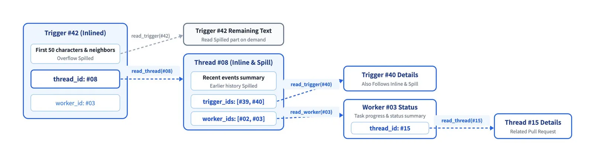
系统给 Trigger、Thread、Worker 会话等对象分配唯一 ID，注入某个对象时，同时 Inline 与它紧密相关的对象的 ID。这些 ID 把对象连成一张引用图。通过工具调用召回的每个对象同样遵循 Inline & Spill，所以返回结果里会 Inline 下一跳对象的摘要和 ID。于是模型可以从当前事件出发，沿这些引用一跳跳召回上下文，需要多远就走多远。
例如，模型可以从当前消息所在的 Thread 出发，沿 Inline 的 ID 找到一个相关的 Worker 会话，再找到与该 Worker 相关联的另一个代码评审 Thread。
3.4 提前行动
我们还借用了计算机系统中的投机执行（Speculative Execution）：Agent 根据环境信号，在还不知道结果是否会被采用时就在后台开始工作。它用额外的后台算力换取人更少的等待和更少的介入。结果有用就交付，其余丢弃。
在个人助手场景中，收到会议邀约邮件或待办消息时，Agent 可以在后台检查日程冲突、搜集背景信息并起草回复，用户只需过目草稿再发送。研发协作也是一样。例如，在我们内部的 DeepSeek Harness 用户群里，我们配置了一条“静默复现并修复”策略：有人报告问题或讨论改动方案时，Agent 先在后台尝试复现并寻找修复方法；只有确认了问题并找到简单修复后才交付结果，否则全程保持安静。
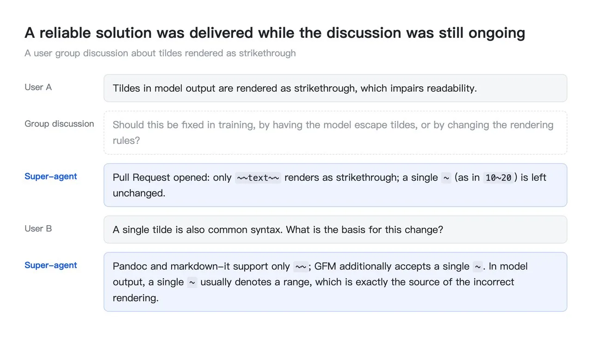
4. 全双工多信道交互
第 2 节的双层架构在上下文层面保证了跨信道交互的连续性。但要让日常交互既连续又高效，还要解决两个问题：交互怎么进行，以及在哪里进行。第一，不让耗时的后台操作阻塞前台对话。异步 ReAct 循环解决了这一点：会话随时可以接受新指令，不必等上一条命令或任务结束（4.1 节）。第二，按各个沟通信道及人们在那里的沟通方式，调整 Agent 回复的内容和详略（4.2 节）。
4.1 全双工
在经典 ReAct 循环中，模型发起一次同步的 run() 工具调用后，循环阻塞，直到工具结束并返回最终结果；在此之前，会话无法响应用户的任何新输入。要消除这种阻塞，对话必须从一问一答的半双工模式变为全双工模式，如下图所示：
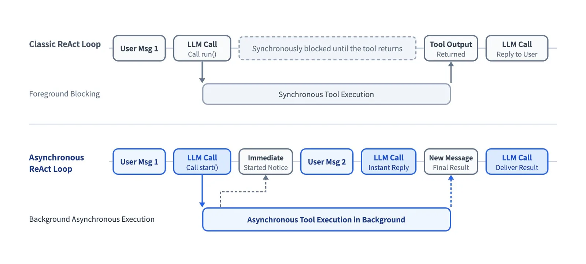
为此，我们把耗时的命令和工具调用换成异步的 start() 与 stop()，把循环变成异步 ReAct 循环。调用 start() 会立即返回“Started”，循环不等待该工具。工具在后台完成时，系统把最终结果作为一条新事件消息投递给会话。模型也可以根据上下文调用 stop()，终止运行过久的后台命令。
前台对话与后台任务解耦之后，Agent 可以在耗时任务后台运行的同时回应人。新输入在当前推理步结束后即被处理，而不是等后台工具完成。
DeepSeek Harness 已经实现了这种异步任务机制，但尚未默认开启。
4.2 多信道
人们在群聊、邮件和 GitHub 讨论里的沟通方式各不相同。Agent 需要针对每个信道调整回复的详略和方式。详细的推理和工具调用日志也许适合单用户终端，但原样贴进群聊，会让参与者被信息淹没。
在 Super-agent 中，双层架构已经解决了这个问题的一部分：每个任务冗长的推理过程和频繁的工具调用都留在各自的 Worker 会话里，从不直接进入外部信道，所有对外交互由 Router 层负责。除此之外，系统还需要接入用户日常依赖的工作环境，并用提示词为每个信道设定交互规范：
- IM 等即时通讯信道：沟通保持轻量，尽量少打扰人。像人类同事一样，只在需要决策或验收时通知别人，只问直接的问题，只给简短的结论。我们验证过一条简单有效的硬规则：每条回复不超过 100 个词。
- GitHub、邮件、文档等异步信道：交付结构化、信息密集的输出。例如创建或更新 Pull Request 时，按项目惯例写清完整的问题背景、改动说明和验证结果。在个人助手场景中，则直接起草结构化的邮件和文档摘要。
5. 计算、状态与环境的分离
默认情况下，本地 Agent 把三样东西绑在同一台设备上：运行 Agent Loop 的计算、必须持久保存的会话状态，以及代码仓库、本地工具链等执行环境。设备一休眠或离线，Agent 就停了，而且它够不着其他设备上的环境。为了让 Super-agent 持久在线，并接入任务所需的真实工作环境，我们借鉴计算机系统中的存算分离（Compute-Storage Separation），分两步解耦这三者。第一步，把计算与会话状态分开，使 Agent 摆脱任何单台机器的生命周期，在云端持久在线（5.1 节）。第二步，把云端的 Agent Loop 与状态繁重的执行环境解耦，执行环境可以留在原地，Agent 跨设备访问它们（5.2 节）。
5.1 计算与状态分离
运行 Agent Loop 的计算可以是无状态的，只有会话状态需要持久化。所以第一层解耦是把这部分计算放到无状态、可弹性伸缩的云容器中运行，把会话等持久状态存进数据库。容器可以扩容、重启或替换，持久存储则保证会话和任务的连续性。本地设备休眠或离线不再让 Agent 停下，它在云端持久在线。
5.2 计算与执行环境分离
Agent Loop 和会话状态上云之后，下一个问题是 Agent 如何访问任务所需的执行环境。模型使用的大量上下文来自对代码仓库、本地文件、依赖服务等执行环境的工具调用。所以从广义上说，上下文包括执行环境本身。
常见做法有两种。第一种是在云端启动沙箱、拉取代码，尝试重建和同步环境。但真实的工作环境往往包含未提交的本地改动、私有凭证、对内网服务的依赖，以及特定的硬件或工具链。同步这一切代价高昂，也容易遗漏。第二种是要求用户放弃本地环境、把工作迁到云端，对许多用户来说迁移成本太高。
既然难以复制和同步的是环境本身，就没必要把它和 Agent Loop 一起搬上云。第二层解耦让 Agent Loop 运行在云端，而状态繁重的执行环境留在原处。每个端点只需一个轻量守护进程（daemon），它不保存任何会话状态，只负责执行命令和返回结果。执行环境留在云外，Agent 按需从中读取上下文。
Anthropic 的《Decoupling the brain from the hands》（大脑与双手解耦）采用了同样的思路：harness 保持无状态，会话日志存在它之外，执行环境通过统一接口按需接入。区别在于目标场景。Anthropic 那篇文章描述的是托管服务，主要讨论按需创建的沙箱和客户 VPC 内的资源。我们首先要接入的是人们每天在用的个人机器，它们带着未提交的改动和本地凭证，而且可能只是间歇在线。因此我们的设计支持 BYOM（Bring Your Own Machine，自带机器），把用户自己的开发机或个人电脑接入云端 Agent；同时也支持云端托管机器和按需创建的计算环境。
这样一来，Agent 不再绑定于某一台机器。它可以在执行设备之间切换，在任务需要的任何环境里运行命令、读取上下文，甚至能配合只间歇在线的设备工作：用户的个人设备重新连上时，云端 Agent 会自动开始并完成需要在那台设备上运行的任务。下图展示了由此形成的结构——计算、持久状态与执行环境在两个层次上解耦：
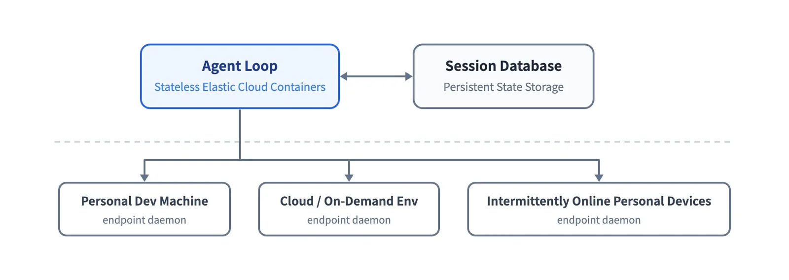
6. Watchdog
要持久在线，光有第 5 节的存算分离还不够：系统还必须在长期运行中自动从异常中恢复。一个持久在线的分布式系统，如果只靠内部逻辑，很少能长期保持可靠。它需要一个位于主系统之外的独立控制回路（Control Loop）。
Agent 系统需要的也不只是传统的进程存活探针或监控脚本。许多异常不是崩溃：进程还在跑，但模型陷入了无效循环，或者偏离了目标。因此，长期运行的 Agent 系统既要监控基础设施是否存活，也要监控任务的进展。
我们的外部控制回路是一个独立的 Watchdog 会话，运行在主系统之外，由定时消息驱动。Watchdog 处理 API 报错、状态恢复失败等基础设施故障；它还用模型判断每个 Worker 是否在取得实质进展、是否偏离总体目标。它会及时修复异常，并对暂时性的外部故障持续复查，直到问题解决。
由于 Watchdog 本身就是一个配备全套工具的 Agent 会话，维护者可以用自然语言问它某件事为什么失败，也可以让它在系统运行时纠正主系统的行为，例如增删提示词或调整触发规则。
7. 初步实验
我们在两个层面对核心调度与路由设计做了初步实验：整个系统，以及单独的 Router 层。端到端实验把双层架构与单会话设计作比较，并测量订阅与直通机制的效果（7.1 节）；第二个实验测试 Router 层的批处理（7.2 节）。实验使用合成负载和简化环境，部分设置还可以更严谨，所以下面的结果仅供参考。
7.1 消融实验
四种端到端设计同时运行，由一条群聊与 GitHub CI 消息流驱动。每次运行约 300 条消息，其中约 20 条是工作请求，其余是闲聊、追问、取消和 CI 消息。编码工作用一个只消耗时间的工具来模拟，所以实验衡量的是系统的调度与协调，而不是它执行单个任务的能力。每种设计运行 5 次。
四种设计分别是：Super-agent；去掉直通（Pass-through）的 Super-agent；以及两个使用不同提示词、带 Subagent 工具的单会话版本。
- 中性提示词：“Use a subagent for a piece of work when appropriate...”（在合适时把一项工作交给 subagent……）
- 委派优先提示词：“Every message of the chat reaches you, so work you run yourself keeps stopping for new messages. Prefer handing each piece of work to a subagent of its own, and do only small things yourself...”（群里的每条消息都会到你这里，所以你亲自做的工作会不断被新消息打断。尽量把每项工作交给一个专属的 subagent，自己只做小事……）
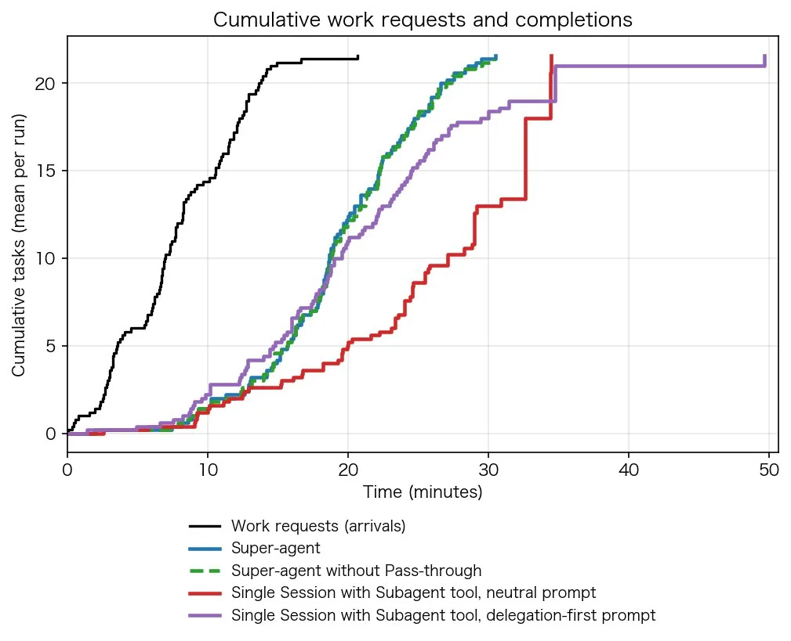
| 设计 | 任务完成时间 p50 / p95（分钟） | 每次运行缓存读取 token（全部会话） |
|---|---|---|
| Super-agent | 12.4 / 15.7 | 23.2M |
| Super-agent（去掉直通） | 12.6 / 15.5 | 31.8M |
| 单会话 + Subagent 工具，中性提示词 | 20.4 / 29.5 | 6.1M |
| 单会话 + Subagent 工具，委派优先提示词 | 13.8 / 29.0 | 10.8M |
注：每种设计运行 5 次。任务完成时间从工作请求发出算到其结果消息出现。
Super-agent 完成任务的 p50 为 12.4 分钟、p95 为 15.7 分钟，明显快于带 Subagent 工具的单会话设计。单会话设计之所以慢，是因为在本实验中它严重依赖提示词：主会话常常决定自己动手，导致完成时间又长又不稳定。用中性提示词时，5 次运行里模型一次都没有调用 subagent；所有工作都在主会话里进行，新消息不断打断它，p95 达到 29.5 分钟。用委派优先提示词时，模型在 5 次中有 4 次做了委派，完成时间有所下降，但总体仍比 Super-agent 长。剩下那一次，模型判断工作“很小”而自己做了，造成了图中紫色的长尾。单会话只能靠提示词工程和模型的临场判断来决定是否委派；双层架构则在系统层面缓解了这个问题：Router 不亲自执行工作，每个 Worker 只收到它所订阅 Thread 的消息。
由于 Super-agent 维护多个独立会话，它每次运行的缓存读取 token 比单会话设计多，用 token 换取更短、更稳定的完成时间。去掉直通的 Super-agent 完成任务的时间与 Super-agent 大致相同，但其 Router 每次运行要多做约 30% 的决定，缓存读取 token 总量从 23.2M 升到 31.8M，多出约 37%。所以在这一负载下，直通并没有让任务完成得更快或更好，但显著减少了 Router 会话的 token 用量和推理开销。
7.2 Router 层批处理
为了弄清靠 2.1 节所述的批处理，单个常驻 Router 会话能承受多大负载，我们单独对 Router 层做了压力测试。Router 调用真实模型，Worker 使用模拟模型。我们把需要决策的 Trigger 到达速率从每分钟约 1 个逐步提高到约 40 个，在每个速率下测量平均批大小、单次请求耗时，以及每个决定分摊的推理时间。一个决定可能跨越多次 LLM 请求——Router 在分派前可能要多步推理，或通过工具调用召回上下文——所以每个决定的耗时可以超过单次请求的耗时。
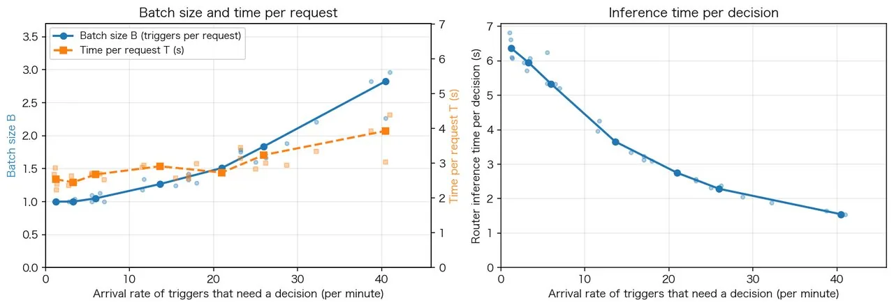
如上图所示，当需要决策的 Trigger 到达速率从每分钟约 1 个升到约 40 个时，平均批大小从 1.0 增至 2.8，单次请求耗时只从 2.5 秒增至 3.9 秒，增速慢于批大小，因此每个决定分摊的推理时间从 6.4 秒降到 1.6 秒。换句话说，外部事件突发时，Router 层通过自动合并积压的事件提高了有效吞吐。批处理也解释了 7.1 节的结果：去掉直通抬高了 Router 的峰值负载，但单个 Router 仍未触及吞吐上限。所以在我们目前的团队规模下，没有必要以牺牲全局上下文连续性为代价，过早地对 Router 层分片。
8. 开放问题
第 2 至 6 节介绍了构成 Super-agent 基本架构的五个模块，第 7 节的实验表明，其核心调度与路由机制在多任务并发时是有效的。系统之所以能保持相对简单，很大程度上是因为在现阶段我们简化了工程设计和所支持的场景。在这些简化之外，还有四个方面的问题悬而未决：双层架构如何扩展（8.1 节）、如何与没有会话的 Agent 协作（8.2 节）、上下文边界与 Agent 间（A2A）通信（8.3 节），以及安全与隐私（8.4 节）。
8.1 双层架构如何扩展
到目前为止，一个简单的组合就以很低的工程成本覆盖了我们大部分日常任务：单个常驻 Router 会话、订阅与直通、Worker 之间不直接通信。一旦任务变得更大、耦合更紧，超出一个 Router 会话的承受能力，每一层该采用什么结构还没有定论。我们还需要测试更多场景，弄清 Router 层何时该分片、分多细，以及同层 Worker 何时该直接通信、用怎样的协作拓扑。系统与模型的协同设计也是值得探索的方向：专门为 Router 层的工作——判断事件、批量分派、召回上下文——训练模型，可能进一步提升 Router 层的吞吐和决策质量。
记忆也限制着系统能扩展多远。常驻的 Router 层加上基于引用图的链式召回，主要解决近期任务和会话历史的按需检索。一旦系统运行数月乃至更久，长期记忆就会成为主要瓶颈。
8.2 如何与没有会话的 Agent 协作
由于双层架构向用户隐藏了多会话管理，会话不再是产品设计的主要关注点。但一旦底层的执行会话不再与界面上的对话一一对应，新问题就出现了：如何向用户呈现任务，什么样的交互和项目管理方式才自然。我们认为，聊天窗口成为交互中心，部分是路径依赖的结果。更多交互可能会转移到特定领域的界面里，比如我们的 Super-agent 实例就直接在 GitHub Issue 和 Pull Request 中工作。会话也可以因为用户习惯而保留在界面上，但用户看到的一段对话不必对应底层的一个会话。
前面各节主要涉及任务开始和验收时的人类交互。但在模型快速进步的这个过渡期，许多任务仍需要人在中途参与。产品设计如何让用户在关键细节上逐步介入，又不失后台自主工作的效率，也值得探索。例如，用户可以在后台执行的任何时刻插手、接管，或与 Agent 实时协作。
总的来说，用户需要的项目管理和交互方式高度依赖其工作领域和个人风格，最终设计很可能高度定制化。DeepSeek Harness 采用开放架构，更便于支持这类定制。
8.3 如何界定上下文边界并通过 A2A 协作
到目前为止，我们讨论的是单个 Super-agent 实例的设计，并假设其范围内的所有信息都汇集在一个全局上下文里。当使用范围从个人和小团队扩大到更大的组织时，决定如何配置 Super-agent，实际上就是决定哪些上下文共享、哪些隔离：组织中需要共享上下文的部分共用一个实例，需要隔离的部分各有各的实例。
一旦组织内部或组织之间存在相互隔离的实例，跨越边界的协作就是 A2A 通信，比如每个成员的个人助手与团队共享的 Super-agent 之间。这里的 A2A 泛指 Agent 与 Agent 之间的通信，而非某个特定协议。不共享底层上下文、各自代表不同权限边界的 Agent 之间如何安全可靠地通信与协作，仍有待解决。
8.4 如何保障安全与隐私
第 3 节的事件驱动设计让更多样的环境能够驱动 Agent，但也让 Agent 暴露在更多不可信输入之下。安全与隐私处理不好，Super-agent 就只能在很小的可信范围内工作。
例如，第 5 节的设计把 Agent Loop 放在云端，在执行设备上安装轻量守护进程，这隐含地假设云端与端点相互信任。但云端的 Agent Loop 不断摄入外部事件，而端点设备上有私有代码、敏感数据和本地凭证。把两者连起来会带来重大的安全与隐私风险：如果服务端入侵或提示词注入攻陷了 Agent Loop，与之相连的每台端点设备都可能被接管。
即便云端从未被攻破，凭证也可能泄露。只要端点上的凭证可能进入模型的上下文，正常执行就可能把它们暴露出去。因此，Agent 需要一种使用凭证却从不看到凭证的方式。要让这套架构得到更广泛的应用，就必须在保持从多种环境召回上下文的能力的同时，解决这些安全与隐私问题。
9. 结语
这套设计并没有提出新理论，而是把计算机系统中的经典工程思想应用到 Agent 系统的构建中。具体实现会随技术发展而变化，但我们相信背后的系统设计思路会更长久地有用。我们基于这些思路和 DeepSeek Harness 构建的内部 Super-agent 实例已在持续运行，每天参与复现与修复问题、响应代码评审，以及开发 DeepSeek Harness 本身。
正如开篇所说，大模型在单个任务上需要的人类干预越来越少，进一步提升生产力的瓶颈正在转向人的注意力。双层架构、事件驱动设计、异步多信道交互、存算分离和外部 Watchdog 合在一起，让系统接管了管理会话、同步上下文这些繁琐工作。人由此可以进一步上移，从执行细节转向更高层的决策与验收。
这样构建出来的 Agent 不再只是一个等待指令的聊天窗口，而成为在人们所用的数字环境中持续在线的自主协作者。对个人，它可以是跨设备协助处理日常事务的个人助手；对团队，它成为研发工作流的一部分，承接任务并推动其前进。我们相信，随着模型与系统架构共同演进，这种更自主的工作方式可能成为人机协作的常态。
本文的部分设计已在 dsh-superagent-prototype 中实现。该插件只是为验证技术路线而提供的原型，并非 DeepSeek 的正式产品。
作者与致谢
本文源于 DeepSeek Harness 团队的共同工作。Yujia Qiao 完成系统实现并撰写本文。Huanqi Cao、Zui Chen、Xieting Chu、Tianyi Cui、Shiyuan Feng、Yudong Han、Kexin Liu、Shichun Liu、Gesi Luo、Yifan Shi、Tongrui Xiong、Hanxiang Xu、C.C. Yu、Ziya Zhang、F. Zhou 等参与了审阅与讨论并提供反馈。系统与本文都离不开团队日常的交流与积累。
配套原型：deepseek-ai/dsh-superagent-prototype
dsh-superagent 是面向单个 GitHub 仓库的主动式编程 Agent，打包成 DeepSeek Harness（dsh）的插件 bundle。它监听 GitHub（可选飞书），被允许的人向它要工作时，它开一个工作项（Ticket），在独立的 Agent 会话与目录里干活，再回到原对话交付（例如提一个 PR）；一个网页面板只显示“需要人处理”的事项。
- 状态：v0.1.0，单次提交（2026-10-31 20:05 UTC+8），创建于 10-31 17:32 UTC+8；★11,310 / 1,150 fork（GitHub API，2026-11-02 20:40 UTC+8）。MIT 许可，Copyright (c) 2026 DeepSeek Harness Team。
- 依赖：Node.js 22.19+ 或 24+、pnpm、git、tmux、Python 3.8+、GitHub CLI，以及 dsh
^0.2.1-alpha.2；底层插件框架 Cordis，宿主为 deepseek-ai/deepseek-harness（MIT）。 - 上手方式：不写安装步骤给人看，而是让你的编程 Agent 读
SETUP.md陪你装——一次只问一个问题、先给完整计划再执行、从不在聊天里要密钥；默认独立 profilesuperagent、端口 3082、分支前缀agent/、主动工作先用只记录不执行的observe模式、自动合并默认关。 - 设计哲学（docs/000）：“占用尽可能少的人类注意力，给出尽可能多的价值”。只在被要求或有团队写下的规则允许时才行动；只在有人需要行动或能用上结果时才说话；一次只问一个具体问题；按影响而非工作量决定停在哪；如实汇报。
- 文档：000 理念 → 001 领域模型 → 002 授权 → 003 执行 → 004 提示词 → 005 面板 → 006 部署 → 007 架构 → 008 Cookbook（新增 Source），按序阅读。
⚠️ 本站未在本地安装或运行该原型，以上行为描述来自其 README、SETUP 与 docs/000。
附录一：dsh-superagent README 全文中译（MIT）
仅供参考的研究原型，不是 DeepSeek 的正式产品。这些代码产生于我们团队的日常开发工作，其中大量工程由编程 Agent 完成。请把它当作研究代码，而不是可用于生产的软件。它可能仍有 bug，代码风格和工程实践也可能不一致。在你自己的环境中使用前，请先审阅并调整。
我们为发布做了适配，因此它与我们的内部版本以及《Exploring Super-agent Design: Towards a More Autonomous Agent System》中描述的实现并不完全相同。文中讨论的部分设计是未来的发展方向，并未在本原型中实现。
dsh-superagent 是面向单个 GitHub 仓库的主动式编程 Agent，打包为 DeepSeek Harness 的一个 bundle。它监听 GitHub，也可选择监听飞书。当被允许的人向 Agent 请求工作时，它会开一个工作项，在属于该工作项的 Agent 会话和目录里完成工作，并在原对话中回复，例如提交一个 Pull Request。一个网页面板会显示需要人处理的事项。
它也是一种与 Agent 协作的方式：占用尽可能少的人类注意力，给出尽可能多的价值。一个能代表整个团队行动的 Agent，也可能浪费整个团队的注意力，所以它只在被要求、或团队写下的规则允许时才行动，只在有人必须行动或能用上结果时才说话。docs/000-philosophy.md 解释了这一原则，以及它对操作者的要求。
安装
安装步骤很多，所以由一个 Agent 陪你完成。对你的编程 Agent 说：
Read SETUP.md in this repository and set up dsh-superagent with me.（阅读本仓库的 SETUP.md，和我一起安装 dsh-superagent。）
它一次只问一个简短的问题，展示一次完整计划，然后安装并配置好一切。SETUP.md 就是它遵循的说明。
文档
请按顺序阅读编号文档；每一篇只建立在之前的文档之上。
- 000 理念
- 001 领域模型
- 002 授权
- 003 执行
- 004 提示词
- 005 面板
- 006 部署：手动安装、配置、升级与故障排查
- 007 架构
- 008 Cookbook：添加一个 Source
开发
pnpm check 会运行类型检查、测试和构建。
许可证
附录二：英文原文
X Article 英文原文（English original, official machine translation）
Exploring Super-agent Design: Towards a More Autonomous Agent System
The original article is in Chinese. This is a machine translation.
This article discusses architectural ideas. It is not an introduction to existing features of DeepSeek Harness.
1. Super-agent
Over the past year, coding agents and other single-task agents have shown that models can use tools to solve complex problems while needing less and less continuous monitoring and step-by-step intervention from humans. Models have also become better at coordinating multiple agents, which makes it practical to organize and schedule work across sessions. As people take less part in low-level execution, their role is gradually moving up to higher-level decisions and sign-off.
Better models have also enabled new applications. Recently, many personal agents have appeared. They connect directly to everyday messaging, calendar, email, and work platforms, monitor the feeds, and help with tasks. Personal agents are only one application of this always-online, event-driven way of working. This way of working is not specific to personal use and is also valuable in commercial work such as software development.
However, today's mainstream agent designs struggle to support this way of working across many tasks or a whole team. Agents still use a single session as the basic unit of work, and sessions are isolated from one another. A user running several tasks in parallel has to switch between sessions by hand and remember what each one contains. In our experience, a person can usually follow only 3 to 5 active sessions at once. With these designs, a single task is limited by model capability, but multi-tasking is limited by human attention.
Adding CLIs, MCP, or external connectors to an existing local single-session agent lets it receive external messages, but its basic limitations remain. It still runs in one synchronous session that blocks on long operations, contexts from different tasks get mixed together, and everything stops whenever the local device goes offline. Keeping such a setup running takes a lot of manual effort.
Getting past these limits means decoupling the agent from any single, manually driven session. Instead, the agent should be one continuous entity that keeps its context across sessions and works on several complex tasks at once, without the tasks interfering with each other. We call this kind of agent and its system architecture a Super-agent.
For example, our internal Super-agent instance, which runs on DeepSeek Harness, can continue the same development task across IM and GitHub. It also monitors feedback in public group chats and, even when no one @-mentions it, finds root causes on its own and opens Pull Requests to fix them:
We believe a Super-agent has four basic characteristics:
Continuous: Users can interact with it directly where they already work, such as IM chats and GitHub comments, and it always feels like one agent. They never have to wonder whether session X has information Y in its context. For example, if a user asks for Plan A in IM and later switches to Plan B in a GitHub Pull Request comment, the agent understands the change and adjusts what it is doing.
Productive: It responds quickly and completes several complex tasks in parallel, each to a high standard. It can take the next instruction before the previous command or task has finished.
Proactive: It does not wait for step-by-step instructions. It monitors events in its environment, acts on anything worth handling, and stays quiet otherwise.
Persistent: It is always online, connects directly to the user's real working environments, and recovers automatically from anomalies during long-running operation.
No single ReAct loop can provide all four characteristics at once, so they have to come from the system architecture around it. Similar design constraints tend to produce similar architectures. When the goal is an always-online system that responds to environmental events concurrently, we expect personal agents and agents for commercial work such as software development to end up with similar designs. Building such a system also raises many problems much like those long studied in computer systems, so many classic design ideas from that field apply here too.
Implementations will vary, but we think five modules form the basic framework that supports these characteristics. The two-level architecture (Section 2) provides both continuous interaction and productive concurrency. The event-driven design (Section 3) makes the agent proactive. Full-duplex multi-channel interaction (Section 4) keeps each exchange with users both continuous and productive. Separating compute, state, and environments (Section 5), together with a Watchdog (Section 6), keeps the agent persistently online across devices and lets it recover from anomalies on its own.
The diagram below gives an overview of the Super-agent architecture. The modules labeled [2] through [6] are covered in Sections 2 through 6:
2. Two-Level Architecture
Supporting both continuous interaction across channels and productive concurrency across tasks forces a fundamental trade-off between continuity and throughput in how the system organizes its sessions.
Routing every event to one session gives the most continuous context, because that session sees everything. But a ReAct loop runs one step at a time, which caps how fast a single session can work: tasks take a long time and throughput stays low. The intermediate details of different tasks also end up interleaved in one context, which degrades the results.
Giving every event its own new session reverses the trade-off. It maximizes concurrent throughput, but when tasks are not fully independent, the lack of a shared global context leaves their results disconnected. Several sessions replying to the user separately also make the interaction confusing.
To get both continuity and throughput, we can split the work between two layers. A long-lived Router layer (Section 2.1) maintains global continuity by handling all human interaction and global coordination, while a context-isolated Worker layer (Section 2.2) runs tasks with high concurrency, as shown below:
With the two-level architecture, the system takes over context management and concurrent execution, so users seldom have to think about sessions and always work with the same Super-agent. Making users manage sessions by hand, then, is largely a design habit carried over from low-level LLM APIs. Sessions should be an implementation detail of the system, not a mental burden on its users.
In existing designs, a session does two jobs: it manages the model's context, and it is the user's unit of project management. Once the product is decoupled from the underlying sessions, project management no longer has to follow session boundaries. What interaction and task management to offer users becomes a separate product question, which we return to later.
The two levels are a logical division of responsibilities. Neither layer has to be implemented as a single session, and each can have its own internal structure. The next two subsections describe the two layers in turn.
2.1 Router Layer
The Router layer is a long-lived global routing layer that receives human interaction from every entry point. All cross-task information and decisions come together there, so it serves as the system's global sequence point, coordination point, and memory. To keep this single global node from becoming a performance bottleneck, the Router layer is designed not to execute tasks itself. It only interacts with humans and dispatches tasks, and it can run without a Bash tool at all.
With one central node dispatching tasks to several execution nodes, this structure looks like a typical Agent Team, but the two focus on different things. An Agent Team usually breaks one complex task into steps and coordinates the roles that work on them. Because those steps tend to be tightly coupled, the Team Lead often has to understand the task in depth, plan subtasks, and coordinate members frequently, which adds up to a heavy reasoning load. In a Super-agent, the Router layer only dispatches tasks and tracks how they relate to each other at a high level. It does not break down individual tasks. Conversely, an Agent Team can also work as a two-level architecture. For that, its prompts must keep the main session from executing tasks itself and limit it to external interaction and to dispatching separate tasks to members, who work on them independently. In our experience, the Router layer's work is often simpler than expected, and a lighter model can usually provide both speed and quality.
Internally, the Router layer does not have to be a single session either, and some of its logic may not need an LLM at all. We chose the most direct design, a single long-lived LLM session, and found that it is less likely to become a throughput bottleneck than it might seem. The reason is that environmental events (the Triggers of Section 3) that arrive during one inference turn queue up and are processed together in the next turn. The result is batching, and processing the events together adds little overhead:
When external events arrive at a steady rate, Triggers reach the Router Session one at a time, and each response comes back quickly.
When events arrive in bursts and start to queue at the Router Session, the Triggers that built up during the previous turn are merged automatically and injected together into the next LLM call. Because the Router Session only does lightweight interaction and dispatch, each step usually has a long input and a short output. Triggers merged into one LLM API call are computed in parallel during Prefill, so the time per request grows much more slowly than the batch size. Up to a point, then, the larger the backlog, the lower the amortized inference time per decision. The limit depends on the context length and on how many Triggers the model can handle accurately in one turn.
Section 7.2 quantifies the effect of batching with an experiment. Combined with subscription and pass-through (Section 3.2) and Chain of Recall (Section 3.3), a single long-lived Router Session keeps the context continuous and is already enough for a team of our current size.
If the system grows to the point where one session really cannot keep up, the Router layer can use a multi-stage filtering structure internally, or be split into several sessions by horizontal sharding. Its internal design then comes down to the same trade-off between continuity and throughput. The finer the sharding, the more concurrent throughput the Router layer gets, but the less memory and context the shards share. This trade-off will remain until the global memory problem is solved.
2.2 Worker Layer
The Worker layer consists of the sessions that execute tasks. Each Worker has an isolated context and a full set of execution tools, and is dedicated to a single task. Worker Sessions directly determine the result of each task and the quality of its code, so they usually need the most capable models.
Workers never interact with humans directly. Their reasoning process and tool calls stay out of external channels. Instead, each Worker reports its status to the Router layer, which handles all replies to the user. This way, the system keeps both its concurrency and the quality of its output, without the confusion of several sessions replying separately.
When tasks run concurrently, each Worker works on its own task, and peer Workers usually do not need to communicate directly. Conflicts between Workers tend to arise in a shared working environment, such as the same Pull Request. As long as the Workers involved all subscribe to that environment's Thread, they receive the same event notifications (Section 3.2) and have a chance to spot and resolve the conflict on their own. The Router layer relays the few cases that need coordination across tasks.
Like the Router layer, a Worker does not have to be a single session internally. For a complex task, a Worker can create subagents or be an Agent Team itself, and this is transparent to the Router layer above it. The same structure fits code collaboration, where independent tasks such as reproducing issues, reviewing Pull Requests, and developing features can proceed at once without blocking each other. It also fits personal agent scenarios, even though a personal agent usually offers only a single chat page. When a user discusses several topics at once in that chat, the page keeps the conversation continuous. Meanwhile, the backend can dispatch a separate Worker for each topic to work on tasks and draft replies in parallel.
3. Event-Driven Triggers
To make a Super-agent proactive, we first need to change what drives the system. The agent's main input is no longer prompts that a human types into a session one at a time, but semi-structured events from the environment. In a Super-agent, these environmental events, such as group chat messages, emails, calendar reminders, code review comments, and CI results, are called Triggers. Because the agent listens for and responds to Triggers, it no longer has to wait for a human command before each run, as a single-session agent must.
The subsections below follow an environmental event from arrival to processing, in four steps that build on each other. First, two-stage policies that combine code and models filter out the large volume of noise (Section 3.1). Next, the subscription and pass-through mechanism routes events to Workers (Section 3.2). Inline & Spill and Chain of Recall then inject dense context into the model and recall more of it on demand (Section 3.3). Finally, speculative execution lets the agent act ahead in the background based on environmental signals (Section 3.4).
3.1 Event Filtering
Once connected to real group chats and code platforms, the system sees a noisy event stream with a low trigger rate: the vast majority of everyday messages need no action from the agent. Having a large model judge every event from scratch would add too much latency and use too much compute. Borrowing the Fast Path / Slow Path idea from computer systems, we treat large-model reasoning as a flexible but expensive Slow Path. Frequent, well-defined, stable judgments can instead become deterministic code, which serves as a low-latency, low-cost Fast Path.
So the system filters every incoming event first. Deterministic policies remove noise before any large model is called, and only candidate events that need semantic understanding go to the model. We use two-stage filtering that combines programmatic policies with a large model:
Programmatic policies (Fast Path): Code runs fast admission checks on deterministic conditions such as the event source, the group, and user or bot allowlists. For example, each source can be set to "respond only to explicit requests", "treat as candidate events", or "ignore". These checks drop most irrelevant messages before any model is called.
Semantic policies (Slow Path): Candidate events that pass the programmatic checks go to the LLM, which decides whether to act based on the context and on policies written as prompts. The semantic stage also serves as a natural-language extension point, so humans can turn policies on or off, or add new ones, through prompts at any time, as shown below:
3.2 Event Routing
The global Router layer from Section 2 keeps interaction continuous across channels. But if every follow-up event for an assigned task still had to pass through the Router layer, this single global node would carry a heavy load and slow down responses. So the Fast / Slow Path split also applies to routing filtered events. The Router layer handles only cold starts of new tasks and cross-task coordination, while code sends follow-up events directly to the Worker Session that owns them.
In a real workflow, consecutive events on the same GitHub Pull Request, IM topic, or email chain form an event stream, which we call a Thread:
When the Router layer creates a Worker Session for the first event in a Thread, that Worker subscribes to the Thread directly. From then on, event routing follows one of the two paths shown below:
Subscribed (Fast Path): Code passes follow-up events in the Thread straight through to the subscribed Worker, so the Router layer does not need another tool call to forward them. If a new event falls outside the current task, the Worker can unsubscribe or hand the event back to the Router layer to be dispatched again.
Unsubscribed (Slow Path): The Router layer can still see every event, which lets it track global state, but it only evaluates and dispatches new events that have no subscriber yet.
Subscriptions between Threads and Workers are many-to-many. A Worker can subscribe to several related Threads, and a Thread can have several subscribed Workers. When Workers overlap in the same working environment or discussion, each new event in the shared Thread passes straight through to all of its subscribers at once. The Workers then have a chance to learn what the others are doing and resolve conflicts themselves, without point-to-point communication. On the output side, Workers still report key conclusions to the Router layer, which handles all replies to the user and keeps global memory in sync.
3.3 Context Organization
After an event has been filtered and routed to its target session, the next question is how much information to put into the model's context window. The input is no longer a limited number of human prompts but semi-structured events that the environment produces continuously, so the design of tool calls and event injection matters more. Inject too much, and the window fills up, diluting the model's attention. Inject too little, and the model has to call tools again and again to read context, which adds execution steps. Wasting the context window is wasting the model's intelligence.
We can therefore treat the limited context window as a cache. In terms borrowed from compiler optimization and computer systems, context injection comes down to two basic operations. Inline puts information likely to be needed soon directly into the current context window, saving extra tool-call round trips. Spill keeps full information outside the window when it exceeds the budget or is rarely used, and leaves only a reference or summary in the window, through which the model can read the full information on demand.
Combined with locality, a classic idea in computer systems design, Inline & Spill can improve event injection and tool calls step by step:
Start with minimal information: At first, give the model only the current object's ID and a summary of its content.
Progressively Inline related information via locality: Inline what the model is likely to need soon. Start with the IDs of closely related objects, then add content that is adjacent in space or time. Examples are the first 50 characters of the content, the IM messages around a message and the one it replies to, and neighboring comments in the same code review discussion.
Spill content over the limit: Set a small length cap for long content that cannot be inlined in full, and Spill the excess outside the window. A simple way to do this is to truncate the content and leave a pointer to where it continues, so the model can call a tool to read the rest when it needs to.
The Router layer has a context problem of its own. Many follow-up events pass straight through to Workers, and past tasks build up over long-running operation, so the Router layer cannot keep every task's full history in its context window. Yet when a user brings up an old task in another channel, the Router layer still has to recover that task's context. Applying Inline & Spill consistently to every kind of object in the system gives an on-demand, multi-hop retrieval mechanism: Chain of Recall. It reduces how much earlier information the Router layer loses over long runs, as shown below:
The system gives objects such as Triggers, Threads, and Worker Sessions unique IDs, and inlines the IDs of closely related objects when it injects one. These IDs link the objects into a reference graph. Each object recalled through a tool call also follows Inline & Spill, so the returned result inlines the summaries and IDs of the next-hop objects. Starting from the current event, the model can then follow these references and recall context hop by hop, as far as it needs.
For example, the model can start from the current message's Thread, follow an inlined ID to a related Worker Session, and then find another code review Thread linked to that Worker.
3.4 Acting Ahead
We also borrow speculative execution from computer systems. Based on environmental signals, the agent starts work in the background before it knows whether the result will be used. It uses extra background compute so that people wait less and need to step in less often. Results that turn out to be useful are delivered, and the rest are discarded.
In personal agent scenarios, when a meeting invitation email or a to-do message arrives, the agent can check for calendar conflicts, gather background information, and draft a reply in the background. The user then only needs to look over the draft and send it. The same approach works for R&D collaboration. In our internal DeepSeek Harness user group, for example, we configured a "silently reproduce and fix" policy. When someone reports an issue or discusses a proposed change, the agent first tries to reproduce the issue and find a fix in the background. It delivers a result only after it has confirmed the issue and found a simple fix. Otherwise, it stays quiet the whole time.
4. Full-Duplex Multi-Channel Interaction
The two-level architecture in Section 2 keeps interaction continuous across channels at the level of context. But to make day-to-day interaction both continuous and productive, two more problems need solving: how the interaction works and where it happens. The first is to keep time-consuming background operations from blocking the foreground conversation. An asynchronous ReAct loop solves this, so the session can accept new instructions at any time without waiting for a previous command or task to finish (Section 4.1). The second is to tailor the content and level of detail of the agent's responses to each communication channel and how people communicate there (Section 4.2).
4.1 Full-Duplex
In a classic ReAct loop, when the model makes a synchronous run() tool call, the loop blocks until the tool finishes and returns its final result. Until then, the session cannot respond to anything new from the user. To remove this blocking, the conversation has to move from a turn-based, half-duplex mode to a full-duplex one, as shown below:
To do this, we replace time-consuming command and tool calls with asynchronous start() and stop() calls, turning the loop into an asynchronous ReAct loop. A call to start() returns "Started" immediately, and the loop does not wait for the tool. When the tool finishes in the background, the system delivers its final result to the session as a new event message. Based on the context, the model can also call stop() to end a background command that runs too long.
With the foreground conversation decoupled from background tasks, the agent can respond to people while time-consuming tasks run in the background. New input is handled as soon as the current inference step ends, rather than after background tools finish.
DeepSeek Harness already implements this asynchronous task mechanism, but it is not yet enabled by default.
4.2 Multi-Channel
People communicate differently in group chats, email, and GitHub discussions. The agent needs to adjust both the level of detail and the way it responds to suit each channel. Detailed reasoning and tool-call logs may suit a single-user terminal, but posting them unchanged in a group chat can overwhelm participants with information.
In a Super-agent, the two-level architecture already solves part of this problem. Each task's verbose reasoning process and frequent tool calls stay inside its Worker Session and never go straight to an external channel, while the Router layer handles all external interaction. Beyond that, the system needs to connect to the working environments users rely on every day and use prompts to set interaction norms for each channel:
IM and other instant messaging channels: Keep communication light and interrupt people as little as possible. Like a human colleague, notify people only when a decision or sign-off is needed, ask only direct questions, and give short conclusions. One simple, effective hard rule we have verified is a cap of 100 words per reply.
Asynchronous channels such as GitHub, email, and documents: Deliver structured, information-dense output. For example, when creating or updating a Pull Request, write out the full problem background, the change description, and the verification results according to the project's conventions. In personal agent scenarios, draft structured emails and document summaries directly.
5. Separating Compute, State and Environments
By default, local agents tie three things to one device: the compute that runs the Agent Loop, the session state that must persist, and the execution environment, such as code repositories and local toolchains. The agent stops whenever the device sleeps or goes offline, and it cannot reach environments on other devices. To keep a Super-agent persistently online and connected to the real working environments its tasks need, we borrow compute-storage separation from computer systems and decouple the three in two steps. First, we separate compute from session state, which frees the agent from the lifecycle of any single machine and keeps it persistently online in the cloud (Section 5.1). Second, we decouple the cloud-hosted Agent Loop from state-heavy execution environments, which can then stay where they are while the agent reaches them across devices (Section 5.2).
5.1 Separating Compute from State
The compute that runs the Agent Loop can be stateless, and only the session state has to persist. So the first level of decoupling runs this compute in stateless, elastic cloud containers and keeps sessions and other persistent state in a database. The containers can scale out, restart, or be replaced, while persistent storage preserves the continuity of sessions and tasks. A local device that sleeps or goes offline no longer stops the agent, which stays persistently online in the cloud.
5.2 Separating Compute from Execution Environments
Once the Agent Loop and session state are in the cloud, the next question is how the agent reaches the execution environments its tasks need. Much of the context a model works with comes from tool calls against code repositories, local files, dependent services, and other execution environments. Broadly defined, then, context includes the execution environment itself.
There are two common approaches. The first starts a sandbox in the cloud, pulls the code, and tries to rebuild and sync the environment. But real working environments often include uncommitted local changes, private credentials, dependencies on intranet services, and specific hardware or toolchains. Syncing all of that is expensive, and it is easy to miss something. The second asks users to give up their local environments and move their work to the cloud, a migration that is too costly for many users.
Since the hard part to copy and sync is the environment itself, there is no need to move it to the cloud along with the Agent Loop. The second level of decoupling runs the Agent Loop in the cloud and leaves state-heavy execution environments where they are. Each endpoint needs only a lightweight daemon, which keeps no session state and does nothing but execute commands and return results. The execution environment stays outside the cloud, and the agent reads context from it on demand.
Anthropic's "Decoupling the brain from the hands" takes the same approach: the harness stays stateless, session logs are stored outside it, and execution environments are connected on demand through a unified interface. The difference is the target scenario. Anthropic's article describes a managed service and mainly discusses sandboxes created on demand and resources inside customer VPCs. We first need to connect the personal machines people use every day, which hold uncommitted changes and local credentials and may be online only intermittently. Our design therefore supports BYOM (Bring Your Own Machine), which connects a user's own development machine or personal computer to the cloud agent. It also supports cloud-hosted machines and compute environments created on demand.
As a result, an agent is no longer tied to one machine. It can switch between execution devices, running commands and reading context in whichever environment a task needs. It can even work with devices that are only intermittently online: when a user's personal device reconnects, the cloud agent automatically starts and completes the tasks that need to run on that device. The diagram below shows the resulting structure, with compute, persistent state, and execution environments decoupled at two levels:
6. Watchdog
Staying persistently online takes more than the compute-storage separation in Section 5: the system must also recover from anomalies automatically during long-running operation. A persistently online distributed system rarely stays reliable for long if it relies only on its internal logic. It needs an independent Control Loop outside the main system.
Agent systems also need more than traditional process liveness probes or monitoring scripts. Many anomalies are not crashes: the process is still running, but the model is stuck in an unproductive loop or has drifted from its goal. A long-running agent system therefore has to monitor task progress as well as infrastructure liveness.
Our external Control Loop is an independent Watchdog Session that runs outside the main system and is driven by scheduled messages. The Watchdog handles infrastructure failures such as API errors and failed state recovery. It also uses the model to judge whether each Worker is making substantive progress or drifting from the overall goal. It fixes anomalies promptly and keeps rechecking transient external failures until they are resolved.
Because the Watchdog is itself an agent session with a full set of tools, maintainers can ask it in natural language why something failed. They can also have it correct the main system's behavior while the system runs, for example by adding or removing prompts or adjusting trigger rules.
7. Preliminary Experiments
We ran preliminary experiments on the core scheduling and routing designs at two levels: the whole system, and the Router layer on its own. The end-to-end experiment compares the two-level architecture with single-session designs and measures the effect of the subscription and pass-through mechanism (Section 7.1). The second experiment tests batching in the Router layer (Section 7.2). The experiments use synthetic workloads and simplified environments, and parts of the setup could be more rigorous, so the results below are indicative only.
7.1 Ablation Study
Four end-to-end designs ran at the same time, driven by a stream of group chat and GitHub CI messages. Each run had about 300 messages, of which about 20 were work requests. The rest were casual chat, follow-ups, cancellations, and CI messages. Coding work was simulated by a tool that simply consumes time, so the experiment measures the system's scheduling and coordination, not its ability to execute individual tasks. Each design was run 5 times.
The four designs are Super-agent, Super-agent without Pass-through, and two versions of Single Session with Subagent tool that use different prompts.
The neutral prompt reads "Use a subagent for a piece of work when appropriate...".
The delegation-first prompt reads "Every message of the chat reaches you, so work you run yourself keeps stopping for new messages. Prefer handing each piece of work to a subagent of its own, and do only small things yourself...".
Note: each design was run 5 times. Task completion time is measured from a work request to its result message.
Super-agent completes tasks in 12.4 minutes at p50 and 15.7 minutes at p95, markedly faster than Single Session with Subagent tool. The single-session design is slower because, in this experiment, it depends heavily on its prompt: the main session often decides to do the work itself, which makes completion times long and unstable. With the neutral prompt, the model did not call a subagent in any of the 5 runs. All work ran in the main session, new messages kept interrupting it, and p95 reached 29.5 minutes. With the delegation-first prompt, the model delegated in 4 of the 5 runs. Completion times dropped somewhat, but overall they were still longer than Super-agent's. In the remaining run, the model judged the work "small" and did it itself, which produced the purple long tail in the figure. A single session has to rely on prompt engineering and the model's on-the-spot judgment to decide whether to delegate. The two-level architecture mitigates this problem at the system level instead: the Router does not execute work itself, and each Worker receives only messages from the Threads it subscribes to.
Because Super-agent maintains several independent sessions, it uses more cache-read tokens per run than the single-session designs, trading tokens for shorter and more stable completion times. Super-agent without Pass-through finishes tasks in about the same time as Super-agent, but its Router makes about 30% more decisions per run, and total cache-read tokens rise from 23.2M to 31.8M, about 37% more. So under this workload, pass-through does not make tasks finish faster or better, but it substantially cuts the Router Session's token use and inference overhead.
7.2 Router Layer Batching
To find out how much load a single long-lived Router Session can handle with the batching described in Section 2.1, we stress-tested the Router layer on its own. The Router called a real model, while the Workers used mock models. Step by step, we raised the arrival rate of Triggers that need a decision from about 1 to about 40 per minute. At each rate we measured the average batch size, the time per request, and the amortized inference time per decision. A decision can span several LLM requests, because the Router may reason over several steps or recall context through tool calls before it dispatches, so the time per decision can exceed the time per request.
As the figure above shows, when the arrival rate of Triggers that need a decision rises from about 1 to about 40 per minute, the average batch size increases from 1.0 to 2.8. The time per request grows only from 2.5 s to 3.9 s, more slowly than the batch size, so the amortized inference time per decision falls from 6.4 s to 1.6 s. In other words, when external events arrive in bursts, the Router layer raises its effective throughput by automatically merging the events that have piled up. Batching also explains the result in Section 7.1: removing pass-through raised the Router's peak load, yet a single Router still did not reach its throughput limit. So at our current team size, there is no need to shard the Router layer prematurely at the cost of global context continuity.
8. Open Problems
Sections 2 through 6 describe the five modules that form the basic architecture of a Super-agent. The experiments in Section 7 show that its core scheduling and routing mechanisms work when many tasks run concurrently. The system can stay relatively simple largely because, at this stage, we have simplified both the engineering design and the scenarios we support. Beyond those simplifications, problems remain open in four areas: scaling the two-level architecture (Section 8.1), working with an agent without sessions (Section 8.2), context boundaries and agent-to-agent (A2A) communication (Section 8.3), and security and privacy (Section 8.4).
8.1 How to Scale the Two-Layer Architecture
So far, a simple combination has covered most of our daily tasks at low engineering cost: a single long-lived Router Session, subscription and pass-through, and no direct communication between Workers. Once tasks grow larger and more tightly coupled than one Router Session can handle, the right structure for each layer is not yet settled. We still need to test more scenarios to find out when the Router layer should be sharded and how finely, and when peer Workers should communicate directly and in what collaboration topology. Co-designing the system and the model is another direction worth exploring. Training the model specifically for Router-layer work, such as judging events, dispatching in batches, and recalling context, may further improve the Router layer's throughput and decision quality.
Memory also limits how far the system can scale. The long-lived Router layer, together with Chain of Recall over the reference graph, mainly handles on-demand retrieval of recent tasks and session history. Once the system has run for months or longer, long-term memory becomes the main bottleneck.
8.2 How to Work with an Agent without Sessions
Because the two-level architecture hides multi-session management from users, sessions stop being the main concern of product design. But once the execution sessions underneath no longer map directly to conversations in the interface, a new question arises: how to present tasks to users, and what forms of interaction and project management feel natural. We think the chat window became the center of interaction partly through path dependence. More interaction may move into domain-specific interfaces, as with our Super-agent instance, which works directly in GitHub Issues and Pull Requests. Sessions can also remain in the interface because users are used to them, but one conversation the user sees need not correspond to one underlying session.
The earlier sections mostly cover human interaction at the start of a task and at sign-off. But during this transition, while models are improving quickly, many tasks still need a person partway through. It is also worth exploring how product design can let users intervene step by step on key details without losing the efficiency of autonomous background work. For example, users could step in, take over, or work with the agent in real time at any point during background execution.
Overall, the project management and interaction that users need depend heavily on their work domain and personal style, so the final design is likely to be highly customized. DeepSeek Harness has an open architecture, which makes such customization easier to support.
8.3 How to Define Context Boundaries and Collaborate via A2A
So far we have discussed the design of a single Super-agent instance and assumed that all information within its scope is gathered in one global context. As use grows from individuals and small teams to larger organizations, deciding how to provision Super-agents becomes, in effect, deciding which context is shared and which is isolated. Parts of an organization that need shared context share one instance, and parts that need isolation each get their own.
Once isolated instances exist within or across organizations, collaboration across their boundaries is A2A communication, for example between each member's personal agent and the team's shared Super-agent. Here A2A means agent-to-agent communication in general, not a specific protocol. We still need to work out how agents that share no underlying context and each represent a different permission boundary can communicate and collaborate securely and reliably.
8.4 How to Ensure Security and Privacy
The event-driven design in Section 3 lets a wider range of environments drive the agent, but it also exposes the agent to more untrusted input. Unless security and privacy are handled well, a Super-agent can only work within a very small, trusted scope.
For example, the design in Section 5 runs the Agent Loop in the cloud and installs lightweight daemons on execution devices. It implicitly assumes that the cloud and the endpoints trust each other. But the cloud-hosted Agent Loop keeps taking in external events, while endpoint devices hold private code, sensitive data, and local credentials. Connecting the two creates significant security and privacy risks. If a server-side intrusion or a prompt injection compromises the Agent Loop, every endpoint device connected to it could be taken over.
Credentials can leak even if the cloud is never compromised. As long as credentials on an endpoint can enter the model's context, normal execution can expose them. The agent therefore needs a way to use credentials without ever seeing them. For this architecture to be used more widely, it has to solve these security and privacy problems while keeping its ability to recall context from many different environments.
9. Conclusion
Rather than proposing new theory, this design applies classic engineering ideas from computer systems to building agent systems. Specific implementations will change as the technology develops, but we believe the system design ideas behind them will remain useful for longer. Our internal Super-agent instance, built on these ideas and on DeepSeek Harness, is already running continuously. It helps every day with reproducing and fixing issues, responding to code reviews, and developing DeepSeek Harness itself.
As we noted at the start, large models need less and less human intervention on individual tasks, so the bottleneck to further productivity gains is shifting to human attention. Together, the two-level architecture, event-driven design, asynchronous multi-channel interaction, compute-storage separation, and an external Watchdog let the system take over the tedious work of managing sessions and syncing context. People can then move further up, from execution details to higher-level decisions and sign-off.
Built this way, an agent is no longer only a chat window that waits for instructions. It becomes an autonomous collaborator that stays online in the digital environments people use. For individuals, it can be a personal agent that helps with daily tasks across devices. For teams, it becomes part of the R&D workflow, taking on tasks and moving them forward. We believe that as models and system architectures evolve together, this more autonomous way of working could become the norm in human-agent collaboration.
Parts of the design in this article are implemented in dsh-superagent-prototype. This plugin is only a prototype for validating the technical approach, not an official DeepSeek product.
Author & Acknowledgements
This article is based on shared work by the DeepSeek Harness team. Yujia Qiao implemented the system and wrote the article. Huanqi Cao, Zui Chen, Xieting Chu, Tianyi Cui, Shiyuan Feng, Yudong Han, Kexin Liu, Shichun Liu, Gesi Luo, Yifan Shi, Tongrui Xiong, Hanxiang Xu, C.C. Yu, Ziya Zhang, F. Zhou, and others took part in reviews and discussions and gave feedback. Both the system and this article owe much to the team's daily exchanges and the experience it has built up.
Table in §7.1 (original markdown):
| **Design** | **Task completion time p50 / p95 (min)** | **Cache-read tokens per run (all sessions)** | | --- | --- | --- | | **Super-agent** | 12.4/15.7 | 23.2M | | Super-agent without Pass-through | 12.6/15.5 | 31.8M | | Single Session with Subagent tool, neutral prompt | 20.4/29.5 | 6.1M | | Single Session with Subagent tool, delegation prompt | 13.8/29.0 | 10.8M |
README 英文原文（English original）
# dsh-superagent > **Research prototype for reference only, not an official DeepSeek product.** This code grew out of our team's day-to-day development work, with much of the engineering done by coding agents. Treat it as research code, not production-ready software. It may still contain bugs, and its coding style and engineering practices may be inconsistent. Review and adapt it before using it in your own environment. > > We have adapted it for publication, so it is not identical to our internal version or the implementation described in *Exploring Super-agent Design: Towards a More Autonomous Agent System*. Some designs discussed in the article are directions for future development and are not implemented in this prototype. dsh-superagent is a proactive coding agent for one GitHub repository, packaged as a bundle for [DeepSeek Harness](https://www.deepseek.com/en/harness/). It listens to GitHub and, optionally, Feishu. When someone allowed asks the agent for work, it opens a work item, works on it in its own agent session and directory, and answers in the original conversation, for example with a pull request. A web panel shows what needs a person. It is also a way of working with an agent: **take as little human attention as possible, and give as much value as possible.** An agent that can act for a whole team can also waste a whole team's attention, so it acts only when asked or when a rule the team wrote allows it, and speaks only when someone must act or can use a result. [docs/000-philosophy.md](docs/000-philosophy.md) explains the principle and what it asks of the operator. ## Setup Setup has many steps, so an agent does it with you. Ask your coding agent: > Read SETUP.md in this repository and set up dsh-superagent with me. It asks one short question at a time, shows the full plan once, and then installs and configures everything. [SETUP.md](SETUP.md) is what it follows. ## Documentation Read the numbered documents in order; each builds only on the ones before it. - [000 Philosophy](docs/000-philosophy.md) - [001 Domain model](docs/001-domain.md) - [002 Authorization](docs/002-authorization.md) - [003 Execution](docs/003-execution.md) - [004 Prompts](docs/004-prompts.md) - [005 Panel](docs/005-panel.md) - [006 Deployment](docs/006-deployment.md): manual setup, configuration, upgrades and troubleshooting - [007 Architecture](docs/007-architecture.md) - [008 Cookbook](docs/008-cookbook.md): adding a Source ## Development `pnpm check` runs the typecheck, the tests and the build. ## License [MIT](LICENSE)
MIT 许可声明原文（LICENSE）
MIT License Copyright (c) 2026 DeepSeek Harness Team Permission is hereby granted, free of charge, to any person obtaining a copy of this software and associated documentation files (the "Software"), to deal in the Software without restriction, including without limitation the rights to use, copy, modify, merge, publish, distribute, sublicense, and/or sell copies of the Software, and to permit persons to whom the Software is furnished to do so, subject to the following conditions: The above copyright notice and this permission notice shall be included in all copies or substantial portions of the Software. THE SOFTWARE IS PROVIDED "AS IS", WITHOUT WARRANTY OF ANY KIND, EXPRESS OR IMPLIED, INCLUDING BUT NOT LIMITED TO THE WARRANTIES OF MERCHANTABILITY, FITNESS FOR A PARTICULAR PURPOSE AND NONINFRINGEMENT. IN NO EVENT SHALL THE AUTHORS OR COPYRIGHT HOLDERS BE LIABLE FOR ANY CLAIM, DAMAGES OR OTHER LIABILITY, WHETHER IN AN ACTION OF CONTRACT, TORT OR OTHERWISE, ARISING FROM, OUT OF OR IN CONNECTION WITH THE SOFTWARE OR THE USE OR OTHER DEALINGS IN THE SOFTWARE.